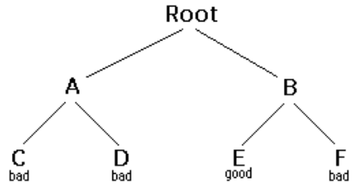

Backtracking
Backtracking is Form of recursion.
The usual scenario is that you are faced with a number of options, and you
must choose on of these. After you make your choice you will gat a new set
of options; just set of options yiu get depends on what choice you made.
this procedure is reprasented over and until you reach a final state. if
you made a good sequence of choces, you final state is a goal state; if
you didn't it isn't.
Conceptually, you strat at the root of a tree probaly has some god leaves,
though it may be that the laeaves are llaa good are all bad.you want to
get to a good leaf. At each node beginig with the root you choose one of
its children Move to and you keep this up util you grt to a leaf
Suppose you get to a bad leaf You can backtracking to continue the search
for a good leaf by revoking your Most recent choise,
and trying out the next option in that set of option. if you run out of
option, revock the coise thaat get you here , and try
another choice at the node. if you end up at the root with no options
left,there are no good leaves to be found
This needs an example

| 1. startng at Root, your option aree A and B. You choose A. |
| 2.At A, Your option are C and D You Choose C. |
| 3.Cis bad. Go back to A. |
| 4. At A you Have already tried C, and it failed . Try D. |
| 5. D is bad Go back to A. |
| 6. At A you Have No options left to try. Go to Root. |
| 7. At Root, you have alred A. try B. |
| 8. At B, Your options are E and F. Try E |
| 9. E is good Congratulation! |
in this example we drew a
picture of a tree. The tree is an abstract model of the possible sequences of choices we could
make. There is also a data structure called a tree,but usually we don't have a data atructure to tell us what chaice we
have.(if we do have an actual tree data struture,backtracking on it is called depth-first tree searching.)
The backtracking algorithm.
boolean solve(Node n){
if n is a leaf node{
is a goal node,true
else return false
}else{
for each child c of n {
if solve(c)succeeds,return true
}
return false
}
}
Notice that the algorithm is expressed as a boolean function. This is essential to understanding the algorithm. if
solve(n) is true,that means node n is part of a solution--that n is one of the nodes an path from the root to
some goal node. we say that n is salvable.if solve(n) is false, then there is no path that inculed n to any goal node.
How does this work?
- it any child of n is solvable, then n is solvable.
- It no child of n sovable,then n is not solveble.
This Program runs correctly and produces the unenlightening result true.
Each time we ask for another node, we have to check if it is null.In the
above we put that check as the first thing in solvable.An alternative
would be to check first whether each child exsist,and recur only if they
do. Here's that do.Here's that alternative version:
for each child c of n{
if solve(c) succeeds,return true
}
return false
Eventully the recursion will "bottun" out at a leaf node. if the leaf
node. the recursion will "bottun" out at a leaf node. if the leaf node. it
is not solvable. this is our base case. in the abve code this is done by
the lines
if n is a leaf node {
if the leaf is goal node,return true
else return false
}
The backtraking algorithm is simple but important. you should understand
it thoroughly Another way of stating it is as follows:
-
If the tree consists of a single leaf, test whether it is a goal node
-
Otherwise, search the subtrees until you find one containing a goal
node, or until you have searchedd them all unsuccessfully.
Non-recursive backtracking, using a stac
Backtraking is a rather typical recursive algorithm, and any recursive
algoritham can be rewritten as a stack algorithm. In fact, that is how.
your recursive algorithm are translated into machine or assembly language.
boolean solve(Node n) {
put node n on the stack; while the stack is not empty
{ if the node at the top of the stack is a leaf {
if it is a goal node, return true else pop it off the stack
} else {
if the node at the top of the stack has untried children push
the next untried child onto the stack else pop the node off the stack
}
return false }
Starting from the root, the only nodes that can be pushed onto the stack
are the children of the node currently on the top of the stack, and these
are only pushed on one child at a time; hence, the nodes on the stack at
all times describe a valid path in the tree. Nodes are removed from the
stack only when it is known that they have no goal nodes among their
descendents. Therefore, if the root node gets removed (making the stack
empty), there must have been no goal nodes at all, and no solution to the
problem. When the stack algorithm terminates successfully, the nodes on
the stack form (in reverse order) a path from the root to a goal node.
Similarly, when the recursive algorithm finds a goal node, the path
information is embodied (in reverse order) in the sequence of recursive
calls. Thus as the recursion unwinds, the path can be recovered one node
at a time, by (for instance) printing the node at the current level, or
storing it in an array. Here is the recursive backtracking algorithm,
modified slightly to print (in reverse order) the nodes along the
successful path:
boolean solve(Node n) {
if n is a leaf node {
if the leaf is a goal node
{ print n return true
} else return false } else {
for each child c of n { if solve(c) succeeds
{ print n return true } }
return false } }
Keeping backtracking simple
All of these versions of the backtracking algorithm are pretty simple, but
when applied to a real problem, they can get pretty cluttered up with
details. Even determining whether the node is a leaf can be complex: for
example, if the path represents a series of moves in a chess endgame
problem, the leaves are the checkmate and stalemate solutions To keep the
program clean, therefore, tests like this should be buried in methods. In
a chess game, for example, you could test whether a node is a leaf by
writing a gameOver method (or you could even call it isLeaf). This method
would encapsulate all the ugly details of figuring out whether any
possible moves remain. Notice that the backtracking altorithms require us
to keep track, for each node on the current path, which of its children
have been tried already (so we don't have to try them again). In the above
code we made this look simple, by just saying for each child c of n. In
reality, it may be difficult to figure out what the possible children are,
and there may be no obvious way to step through them. In chess, for
example, a node can represent one arrangement of pieces on a chessboard,
and each child of that node can represent the arrangement after some piece
has made a legal move. How do you find these children, and how do you keep
track of which ones you've already examined? The most straightforward way
to keep track of which children of the node have been tried is as follows:
Upon initial entry to the node (that is, when you first get there from
above), make a list of all its children. As you try each child, take it
off the list. When the list is empty, there are no remaining untried
children, and you can return "failure." This is a simple approach, but it
may require quite a lot of additional work. There is an easier way to keep
track of which children have been tried, if you can define an ordering on
the children. If there is an ordering, and you know which child you just
tried, you can determine which child to try next. For example, you might
be able to number the children 1 through n, and try them in numerical
order. Then, if you have just tried child k, you know that you have
already tried children 1 through k-1, and you have not yet tried children
k+1 through n. Or, if you are trying to color a map with just four colors,
you can always try red first, then yellow, then green, then blue. If child
yellow fails, you know to try child green next. If you are searching a
maze, you can try choices in the order left, straight, right (or perhaps
north, east, south, west). It isn't always easy to find a simple way to
order the children of a node. In the chess game example, you might number
your pieces (or perhaps the squares of the board) and try them in
numerical order; but in addition each piece may also have several moves,
and these must also be ordered. You can probably find some way to order
the children of a node. If the ordering scheme is simple enough, you
should use it; but if it is too cumbersome, you are better off keeping a
list of untried children.
Example: Tree Search
For starters, let's do the simplest possible example of backtracking,
which is searching an actual tree. We will also use the simplest kind of
tree, a binary tree. A binary tree is a data structure composed of nodes.
One node is designated as the root node. Each node can reference (point
to) zero, one, or two other nodes, which are called its children. The
children are referred to as the left child and/or the right child. All
nodes are reachable (by one or more steps) from the root node, and there
are no cycles. For our purposes, although this is not part of the
definition of a binary tree, we will say that a node might or might not be
a goal node, and will contain its name. The first example in this paper
(which we repeat here) shows a binary tree. Here's a definition of the
BinaryTree class:
public class BinaryTree
{
BinaryTree leftChild = null; BinaryTree rightChild = null;
boolean isGoalNode = false;
String name;
BinaryTree(String name, BinaryTree left, BinaryTree right,
boolean isGoalNode)
{ this.name = name;
leftChild = left;
rightChild = right;
this.isGoalNode = isGoalNode;
} }
Next we will create a TreeSearch class, and in it we will define a method
makeTree() which constructs the above binary tree.
static BinaryTree makeTree()
{ BinaryTree root, a, b, c, d, e, f; c = new BinaryTree
("C", null, null, false);
d = new BinaryTree("D", null, null, false);
e = new BinaryTree("E", null, null, true);
f = new BinaryTree("F", null, null, false); a = new
BinaryTree("A", c, d, false);
b = new BinaryTree("B", e, f, false);
root = new BinaryTree("Root", a, b, false);
return root; }
Here's a main program to create a binary tree and try to solve it:
public static void main (String args[])
{ BinaryTree tree = makeTree();
System.out.println(solvable(tree));
}
And finally, here's the recursive backtracking routine to "solve" the
binary tree by finding a goal node.
static boolean solvable(BinaryTree node)
{ /* 1 */ if (node == null) return false; /* 2 */ if
(node.isGoalNode) return true;
/* 3 */ if (solvable(node.leftChild)) return true; /* 4 */
if
(solvable(node.rightChild)) return true;
/* 5 */
return false;
}
Here's what the numbered lines are doing:
public static void main(String args[])
{ BinaryTree tree = makeTree();
System.out.println(solvable(tree));
}
And finally, here's the recursive backtracking routine to "solve" the
binary tree by finding a goal node.
static boolean solvable(BinaryTree node)
{
/* 1 */
if (node == null) return false; /* 2 */
if (node.isGoalNode) return true; /* 3 */
if (solvable(node.leftChild)) return true; /* 4 */
if (solvable(node.rightChild)) return true;
/* 5 */
return false; }
Here's what the numbered lines are doing:
-
If we are given a null node, it's not solvable. This statement is so
that we can call this method with the children of a node, without first
checking whether those children actually exist.
- If the node we are given is a goal node, return success.
-
See if the left child of node is solvable, and if so, conclude that node
is solvable. We will only get to this line if node is non-null and is
not a goal node, says to
- Do the same thing for the right child.
-
Since neither child of node is solvable, node itself is not solvable.
This program runs correctly and produces the unenlightening result true.
Each time we ask for another node, we have to check if it is null. In the
above we put that check as the first thing in solvable. An alternative
would be to check first whether each child exists, and recur only if they
do. Here's that alternative version:
static boolean solvable(BinaryTree node)
{ if (node.isGoalNode) return true;
if (node.leftChild != null && solvable(node.leftChild))
return true;
if (node.rightChild != null && solvable(node.rightChild)) return true;
return false; }
I think the first version is simpler, but the second version is slightly
more efficient.
What are the children?
One of the things that simplifies the above binary tree search is that, at
each choice point, you can ignore all the previous choices. Previous
choices don't give you any information about what you should do next; as
far as you know, both the left and the right child are possible solutions.
In many problems, however, you may be able to eliminate children
immediately, without recursion. Consider, for example, the problem of
four-coloring a map. It is a theorem of mathematics that any map on a
plane, no matter how convoluted the countries are, can be colored with at
most four colors, so that no two countries that share a border are the
same color. To color a map, you choose a color for the first country, then
a color for the second country, and so on, until all countries are
colored. There are two ways to do this: Select to copy /* Layout
Properties */
-
Method 1. Try each of the four possible colors, and recur. When you run
out of countries, check whether you are at a goal node.
-
Method 2. Try only those colors that have not already been used for an
adjacent country, and recur. If and when you run out of countries, you
have successfully colored the map.
Let's apply each of these two methods to the problem of coloring a
checkerboard. This should be easily solvable; after all, a checkerboard
only needs two colors.
boolean mapIsOK()
Used by method 1 to check (at a leaf node) whether the
entire map is colored correctly.
boolean okToColor(int row, int column,
int color)
Used by method 2 to check, at every node, whether there is an
adjacent node already colored with the given color. int[]
nextRowAndColumn(int row, int column) Used by both methods to find the
inext "country" (actually, the row and column of the next square on the
checkerboard).
Here's the code for method 1:
boolean explore1(int row, int column, int color)
{ if (row >= NUM_ROWS)return mapIsOK();
map[row][column] = color;
for (int nextColor = RED;
nextColor <= BLUE; nextColor++)
{ int[] next = nextRowAndColumn(row, column);
if (explore1(next[0], next[1], nextColor)) return true;
}
return false;
}
And here's the code for method 2:
boolean explore2(int row, int column, int color)
{ if (row >= NUM_ROWS)return true; if (okToColor(row, column, color))
{ map[row][column] = color; for (int nextColor = RED; nextColor <= BLUE;
nextColor++) { int[] next = nextRowAndColumn(row, column);
if (explore2(next[0], next[1], nextColor)) return true;
}
}
return false;
}
Those appear pretty similar, and you might think they are equally good. However, the timing information suggests otherwise:
|
2 by 3 map |
3 by 3 map |
3 by 4 map |
| Method 1: |
60 ms. |
940 ms. |
60530 ms.(1 minute) |
|
Method 2:
|
0ms. |
0 ms. |
0 ms |
The zeros in the above table indicate times too short to measure (less than 1 millisecond). Why this huge difference? Either of these methods could have exponential growth. Eliminating a node automatically eliminates all of its descendents, and this will often prevent exponential growth. Conversely, by waiting to check until a leaf node is reached, exponential growth is practically guaranteed. If there is any way to eliminate children (reduce the set of choices), do so!
Debugging techniques
Often our first try at a program doesn't work, and we need to debug it. Debuggers are helpful, but sometimes we need to fall back on inserting print statements. There are some simple tricks to making effective use of print statements. These tricks can be applied to any program, but are especially useful when you are trying to debug recursive routines.
Trick #1: Indent when you print method entries and exits. Often, the best debugging technique is to print every method call and return (or at least the most important ones). You probably want to print, for each method, what parameters it came in with, and what value it leaves with. However, if you just print a long list of these, it's hard to match up method exits with their corresponding entries. Indenting to show the level of nesting can help.
Trick #2: Use specialized print methods for debugging. Don't clutter up your actual code more than you must. Also, remember that code inserted for debugging purposes can itself contain bugs, or (in the worst case) can affect the results, so be very careful with it.
S
Here's our debugging code. For this trivial program, there's almost more debugging code than actual code, but in larger programs the proportions will be better.
static String indent = "";
static String name(BinaryTree node)
{ if (node == null) return null;
else return node.name;
} static void enter(BinaryTree node)
{ System.out.println(indent + "Entering solvable(" +
name(node) + ")"); indent = indent + "| ";
}
static boolean yes(BinaryTree node)
{ indent = indent.substring(3);
System.out.println(indent + "solvable(" + name(node) + ")
returns true");
return true;
} static boolean no(BinaryTree node)
{ indent = indent.substring(3);
System.out.println(indent + "solvable(" + name(node) +")
returns false");
return false;
}
To use this code, we modify solvable as follows:
static boolean solvable(BinaryTree node)
{ enter(node);
if (node == null) return no(node);
if (node.isGoalNode) return yes(node);
if (solvable(node.leftChild)) return yes(node);
if (solvable(node.rightChild)) return yes(node);
return no(node); }
And we get these results:
Entering solvable(Root)
| Entering solvable(A)
| | Entering solvable(C)
| | | Entering solvable(null)
| | | solvable(null) returns
false
| | | Entering solvable(null)
| | | solvable(null) returns
false
| | solvable(C) returns false
| | Entering solvable(D)
| | | Entering solvable(null)
| | | solvable(null) returns false
| | | Entering solvable(null)
| | | solvable(null) returns false
| | solvable(D) returns false
| solvable(A) returns false
| Entering solvable(B)
| | Entering solvable(E)
| | solvable(E) returns
true
| solvable(B) returns true
solvable(Root) returns
true true
Trick #3: Never discard your debugging statements.
Writing debugging statements is programming, too. Often it's as much work to debug the debugging statements as it is to debug the actual program. Once your program is working, why throw this code away? Obviously, you don't want to print out all this debugging information from a program you are ready to submit (or to turn over to your manager). You could comment out your debugging calls, but that can be a lot of work. What's more, in the above example, you would have to replace every return(yes(node)) with return(true), and every return(no(node)) with return false. With all these changes, you might introduce new bugs into your program. The simple solution is to make your debugging statements conditional. For example,
static final boolean debugging = false;
static void enter
(BinaryTree node) { if (debugging)
{ System.out.println(indent + "Entering solvable(" +
name(node) + ")"); indent = indent + "| ";
}
} static boolean yes(BinaryTree node)
{ if (debugging)
{ indent = indent.substring(3);
System.out.println(indent + "solvable(" + name(node)
+ ")
returns true");
} return true;
} static boolean no(BinaryTree node)
{ if (debugging)
{ indent = indent.substring(3);
System.out.println(indent + "solvable(" + name(node)
+ ")
returns false");
} return false;
}
In industry, actual programs often have multiple flags to control different aspects of debugging. Don't worry too much about making your code larger; modern compilers will notice that since the variable debugging is final, it can never be true, and the controlled code will be discarded.
Trick #4: Create an Exception.
If an Exception is thrown, you can get information about just where it happened by sending it the message printStackTrace(PrintStream). Since an Exception is an object like any other, you can create and throw your own Exceptions. However, Java programmers don't always realize that you can create an Exception without throwing it. For example, the following code
new Exception("Checkpoint Charlie").printStackTrace(System.out);
will print out a message something like this, and the program will then continue normally. That is, the above code just acts like a print statement.
java.lang.Exception:
Checkpoint Charlie at
TreeSearch.solvable(TreeSearch.java:53) at
TreeSearch.solvable(TreeSearch.java:57) at
TreeSearch.main(TreeSearch.java:72) at
__SHELL38.run(__SHELL38.java:16) at
bluej.runtime.ExecServer.suspendExecution(Unknown
Source)
Example: Cindy's Puzzle
I call the following puzzle "Cindy's puzzle" for historical reasons. You have some number n of black marbles and the same number of white marbles, and you have a playing board which consists simply of a line of 2n+1 spaces to put the marbles in. Start with the black marbles all at one end (say, the left), the white marbles all at the other end, and a free space in between.
 |
|
|
 |
|
The goal is to reverse the positions of the marbles:
|
|
The black marbles can only move to the right, and the white marbles can only move to the left (no backing up). At each move, a marble can either:
- Move one space ahead, if that space is clear, or
- Jump ahead over exactly one marble of the opposite color, if the space just beyond that marble is clear.
For example, you could make the following sequence of moves:
| Position start: |
|
The backtracking method is named solvable and returns a boolean. In solvable we shall need to check whether we are at a leaf, which in this case means a position from which no further moves are possible. This isn't so easy. Now to the program. The main program will initialize the board, and call a recursive backtracking routine to attempt to solve the puzzle. The backtracking routine will either succeed and print out a winning path, or it will fail, and the main program will have to print out the bad news. The backtracking method is named solvable and returns a boolean. In solvable we shall need to check whether we are at a leaf, which in this case means a position from which no further moves are possible. This isn't so easy. Each possible move will result in a new board position, and these new board positions are the children of the current board position. Hence to find the children of a node (that is, of a board position), we need only find the possible moves from that node. Remember that it is also highly desirable to find an ordering on these possible moves. Here it is time to stop and take thought. To make progress, we must analyze the game to some extent. Probably a number of approaches would work, and what follows is based on the way I worked it out. If you were to program this puzzle, you might find a different but equally valid approach. First, notice that if a marble has a move, that move is unique: if it can move ahead one square, then it cannot jump. If it can jump, it cannot move ahead one square. This suggests that, to find the possible moves, we might assign numbers to the marbles, and check each marble in turn. When we have looked at all the marbles, we have looked at all the possible moves. This would require having a table to keep track of where each marble is, or else somehow "marking" each marble with its number and searching the board each time to find the marble we want. Neither alternative is very attractive. Next, notice that for a given board position, each marble occupies a unique space. Hence, instead of talking about moving a particular marble, we can talk about moving the marble in a particular space. If a move is possible from a given space, then that must be the only move possible from that space, because if the marble in that space has a move, it is unique. There is a slight complication because not every space contains a marble, but at least the spaces (unlike the marbles) stay in one place.
Now we have a simpler ordering of moves to use in our program. Just check, in order, the 2n+1 spaces of the board. For each space, either zero or one moves is possible. With this understanding, we can write a boolean method canMove(int[] board, int position) which determines whether a move is possible from the given position:
- If the position is empty, no move is possible;
- If the position contains a black marble, the method checks for a move or jump to the right;
- If the position contains a white marble, the method checks for a move or jump to the left.
We write another method int[] makeMove(int[] oldBoard, int position) that will take a board and a position, make a move from that position, and return as its value a new board. (We could write this somewhat more efficiently by changing the old board, rather than creating a new one, but here we are more concerned with simplicity.) In technical jargon, makeMove is "applicative" rather than "mutative." Along with canMove and makeMove, we are using methods puzzleSolved and printBoard with meanings that should be obvious. With these methods, our central backtracking method can be written as follows:
boolean solvable(int[] board)
{ if (puzzleSolved(board)) { return true; } for (int
position = 0; position < BOARD_SIZE; position++) { if
(canMove(board, position))
{ int[] newBoard = makeMove(board, position); if
(solvable(newBoard)) { printBoard(newBoard);
return true;
}
}
}return false; }
Along with canMove and makeMove, we are using methods puzzleSolved and printBoard with meanings that should be obvious. Here is some output from the program:
16. WHITE WHITE WHITE______ BLACK BLACK BLACK
15. WHITE WHITE WHITEBLACK______ BLACK BLACK
14. WHITE WHITE______ WHITE BLACK WHITEBLACK BLACK
13. WHITE ______ WHITE BLACK WHITEBLACK BLACK
12. WHITE BLACK WHITE______ WHITE BLACK BLACK
11. WHITE BLACK WHITE WHITE BLACK______ BLACK
10. WHITE BLACK WHITE WHITE BLACK BLACK______
9. WHITE BLACK WHITE WHITE ______BLACK BLACK
8. WHITE BLACK ______WHITE WHITE BLACK BLACK
7. ______WHITE BLACK WHITE WHITE BLACK BLACK
6.BLACK ______WHITE WHITE WHITE BLACK BLACK
5.BLACK BLACK ______WHITE BLACK WHITE WHITE
4. BLACK BLACKWHITE BLACK WHITE ______WHITE
3.BLACK BLACK ______WHITE BLACK WHITE WHITE
2.BLACK BLACK ______BLACK BLACK WHITE WHITE
1.BLACK BLACK ______WHITE WHITE WHITE
Notice that the solution is given in reverse order: BLACK starts out on the left and WHITE on the right, as in the last line. I've added line numbers to the actual output in order to emphasize this point. Backtracking always produces its rggesults (sequence of choices) in reverse order; it is up to you, the programmer, to reverse the results again to get them in the correct order.